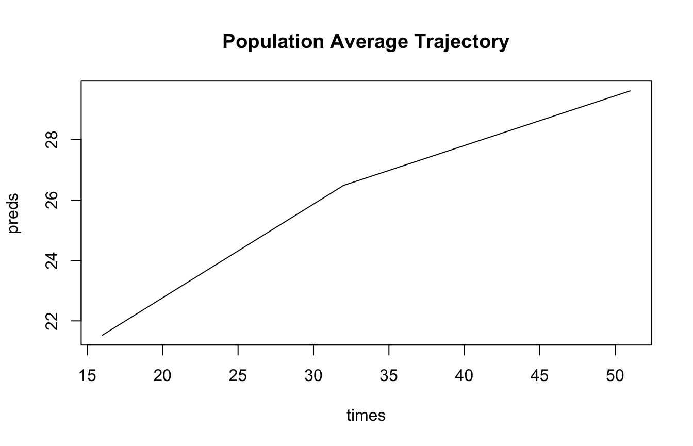
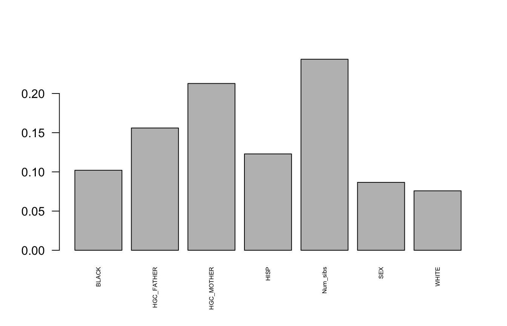
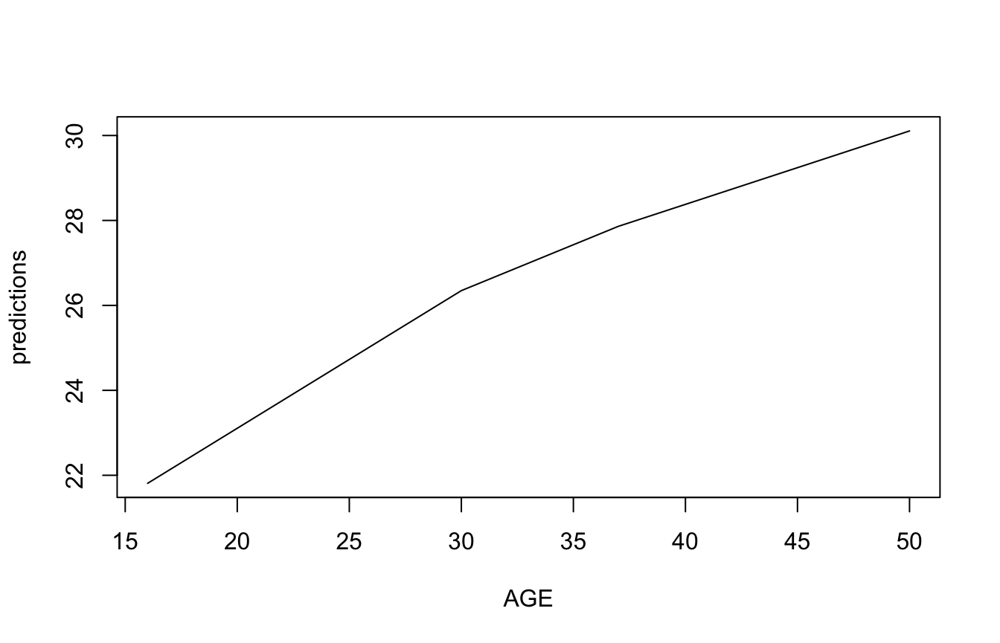
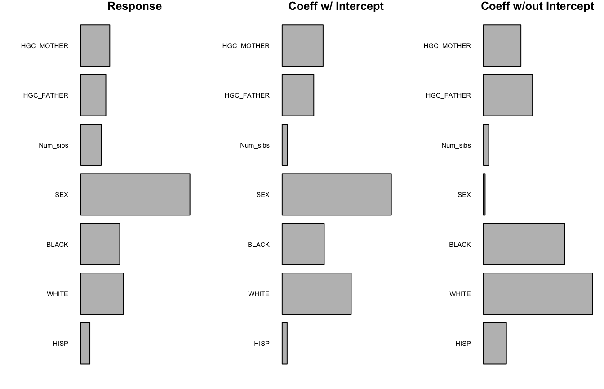

vignettes/Forest-intro.Rmd
Forest-intro.RmdThis guide is meant for users who are familiar with regression trees, random forests, and the spline projection method but who are unfamiliar with the specifics of using the splinetree package. The guide walks through examples of building and evaluating a spline forest. This guide builds off of the vignettes Introduction to splinetree and Tree Building with splinetree. The data used for these examples comes from the National Longitudinal Survey of Youth (NLSY), 1979. In the example, the trajectory of interest is body mass index (BMI) across age, and the split variables are baseline variables related to socioeconomic status and family background.
For users familiar with building trees in splinetree (see Introduction to Tree Building with splinetree), then building a forest is straightforward. The majority of the parameters needed to use the splineForest() function are identical to those used in the splineTree() function; the processed used to project the longitudinal data onto smoothed trajectories is identical. There are just two additional parameters for the splineForest function.
The nTree parameter specifies the number of trees in the forest. The default value is \(50\). Large forests provide additional stability over smaller forests, but on large datasets building a large spline forest may take several minutes. The prob parameter specifies the probability that a variable will be in consideration as a split variable at a given node. To avoid a situation where no variables are considered at a certain node, we recommend that that prob is relatively large when the number of split variables is small. If only 6 split variables are in consideration, then setting prob=1/3 leaves around an 8% chance \(\left( (2/3)^6 \right)\) that no variable will be selected for a split at the root node. Increasing prob to 1/2 reduces this probability to under 2%.
We will build a forest of 50 trees using a probability of 0.5. As split variables, we will include indicators for the subject’s race and sex as well as the subject’s number of siblings and the highest grade completed (HGC) by the subject’s mother and father. We will use a spline basis with 1 degree and 1 internal knot; this choice is based on the knowledge that adult BMI trajectories tend to be steeper in early adulthood before flattening out in late adulthood (Clarke et al. (2008)). We will build both a forest with an intercept for the sake of demonstrating a few functions (such as prediction responses) that are not available for forests without an intercept.
library(splinetree)
## Loading required package: rpart
## Loading required package: nlme
## Loading required package: splines
split_formula <- ~HISP+WHITE+BLACK+SEX+Num_sibs+HGC_FATHER+HGC_MOTHER
tformula <- BMI~AGEforest <- splineForest(split_formula, tformula, idvar="ID",
data=nlsySample, degree=1, df=3, intercept=TRUE,ntree=50,
prob=0.5, cp=0.005)This newly built splineforest object is a named list with 16 components.
names(forest)
## [1] "Trees" "index" "splits" "data"
## [5] "flat_data" "formula" "oob_indices" "degree"
## [9] "intercept" "Ydata" "df" "boundaryKnots"
## [13] "innerKnots" "idvar" "yvar" "tvar"A few of these 16 components have unsurprising values. For example, forest$data holds a copy of the original dataset, and forest$formula, forest$idvar, forest$yvar, and forest$tvar each hold pieces of information about the call to the splineTree() function.
forest$formula
## ~HISP + WHITE + BLACK + SEX + Num_sibs + HGC_FATHER + HGC_MOTHER
forest$idvar
## [1] "ID"
forest$yvar
## [1] "BMI"
forest$tvar
## [1] "AGE"Other components allow us reconstruct the spline basis that was used to build the tree. These are useful for converting coefficients into smoothed trajectories without using built-in functions. The attribute forest$flat_data contains the flattened dataset used to build the trees, including the individually projected coefficients for each individual. We can access the individually projected coefficients more quickly in forest$Ydata. We can use the average of all the individual coefficients as well as the information that is stored about the spline basis in forest$innerKnots, forest$degree, forest$intercept, and forest$boundaryKnots to reconstruct the population average trajectory.
mean_coeffs <- apply(forest$Ydata, 1, mean)
times <- sort(unique(forest$data[[forest$tvar]]))
basisMatrix <- bs(times, degree=forest$degree, Boundary.knots = forest$boundaryKnots,
knots = forest$innerKnots)
if (forest$intercept) {
basisMatrix <- cbind(1, basisMatrix)
}
preds <- basisMatrix %*% mean_coeffs
plot(times, preds, type='l', main="Population Average Trajectory")
Apart from all of the information that is stored about the function call and the spline basis, the splineforest object contains information about the forest itself. Most important of all is the component forest$Trees, which stores a list of rpart objects. This ensemble of trees is the fucntional part of the forest model. We can view any individual tree using stPrint().
stPrint(forest$Trees[[17]])
## n= 1000,
##
## node), split, n , coefficients
## * denotes terminal node
##
## 1) root, 1000, (21.72044, 4.921239, 7.778585)
## 2) Num_sibs< 0.5, 32, (24.25426, 5.075332, 5.877353)*
## 3) Num_sibs>=0.5, 968, (21.63667, 4.916145, 7.841436)
## 6) HGC_MOTHER< 10.5, 336, (21.65032, 6.001674, 8.069025)
## 12) HGC_MOTHER< 0.5, 20, (23.36201, 7.204194, 12.337570)*
## 13) HGC_MOTHER>=0.5, 316, (21.54199, 5.925565, 7.798864)
## 26) BLACK< 0.5, 216, (21.68008, 5.079462, 7.382679)*
## 27) BLACK>=0.5, 100, (21.24372, 7.753149, 8.697824)
## 54) Num_sibs< 2.5, 18, (20.76172, 13.208060, 12.221360)*
## 55) Num_sibs>=2.5, 82, (21.34952, 6.555728, 7.924366)*
## 7) HGC_MOTHER>=10.5, 632, (21.62941, 4.339029, 7.720439)
## 14) BLACK< 0.5, 467, (21.72656, 3.898407, 7.080160)
## 28) Num_sibs< 5.5, 413, (21.59877, 3.722543, 6.932977)
## 56) SEX< 1.5, 206, (22.55904, 3.909956, 7.000419)*
## 57) SEX>=1.5, 207, (20.64315, 3.536035, 6.865860)
## 114) HGC_MOTHER< 11.5, 26, (19.90763, 6.938583, 10.767110)*
## 115) HGC_MOTHER>=11.5, 181, (20.74880, 3.047271, 6.305459)*
## 29) Num_sibs>=5.5, 54, (22.70393, 5.243445, 8.205838)
## 58) HGC_MOTHER< 12.5, 46, (23.11512, 5.701495, 8.540350)*
## 59) HGC_MOTHER>=12.5, 8, (20.33962, 2.609659, 6.282400)*
## 15) BLACK>=0.5, 165, (21.35445, 5.586120, 9.532622)
## 30) HGC_FATHER< 15, 157, (21.39982, 5.267496, 9.166225)*
## 31) HGC_FATHER>=15, 8, (20.46403, 11.839110, 16.723160)*Although we can print any tree in the forest using stPrint(), it is important to note that these trees are not identical to splineTree objects. These rpart trees do not store all of the extra information that is stored in a typical splinetree object. For example, we can note the difference between a single tree and forest$Trees[[17]].
sample_tree <- splineTree(split_formula, tformula, idvar="ID",
data=nlsySample, degree=1, df=2, intercept=TRUE, cp=0.005)
### Try to evaluate both trees
yR2(sample_tree)
## [1] 0.1701266
test <- try(yR2(forest$Trees[[17]]), silent=TRUE)
class(test)
## [1] "try-error"
### Try to access additional information from both trees
sample_tree$parms$degree
## [1] 1
forest$Trees[[17]]$parms$degree
## NULLThe remaining components of forest include forest$index, forest$oob_indices, and forest$splits. The index component let’s us access the data that was used to build each tree. For example, forest$index[[17]] stores the indices of each row in forest$flat_data that was used to build the 17th tree. On the other hand, forest$oob_indices[[17]] stores a list of indices that correpond to rows in forest$flat_data that were NOT used to build tree 17 (these rows were “out of the bag”, or “oob”). Storing both of these pieces of information may seem redundant, but both are accessed frequently in the forest prediction and evaluation functions. If we want to uncover datapoints that are “in the bag”" and “out of the bag” for tree 17, we can use:
itb17 <- forest$flat_data[forest$index[[17]],]
oob17 <- forest$flat_data[forest$oob_indices[[17]],]The in the bag dataset is around twice as large as the out of bag dataset, which makes sense given the known properties of bootstrap sampling (on average, around 2/3 of datapoints will end up in the sample).
The final component of a forest object is accessed in forest$splits. This very long list stores every variable selected as a split throughout the entire forest. It might be useful to compare the frequency with which different variables are selected. It is important to note that these frequecies should \(not\) be used as a variable importance metric. The barplot below shows that HGC_FATHER, HGC_MOTHER, and Num_Sibs are the most frequently selected varaibles throughout the forest. These three variables are the only numeric variables in the dataset; the rest are binary, meaning that they can never be used consecutively in the same branch of a tree. More appropriate measures of variable importance will be discussed below.
freqs <- table(forest$splits)/sum(table(forest$splits))
par(las = 2)
barplot(freqs)
The bias in splits towards variables with more unique values is exacerbated in forests where each tree is very large; in forests such as these, numeric variables with many unique values will be repeatedly used for successive splits while binary variables are limited. It is sometimes useful to check the size of the average tree in the forest and, if necessary, prune each tree in the forest to reduce the average size.
avSize(forest)
## [1] 15.84
avSize(pruneForest(forest, cp=0.01))
## [1] 6.62Making a prediction using a spline forest involves averaging predictions over individual trees in the forest. When making predictions for a datapoint that was not in the training set, the only reasonable option is to use all the trees in the forest to make the prediction. Using this method, either coefficients or response values (assuming forest$intercept==TRUE) can be predicted. In predicting coefficients, no value is required for the “AGE” variable, but in predicting responses ages must be specified.
newData <- data.frame("WHITE" = 0, "BLACK"=1, "HISP"=0, "Num_sibs"=3, "HGC_MOTHER"=12, "HGC_FATHER"=12, "SEX"=1)
preds <- predictCoeffsForest(forest, testdata = newData)AGE <- c(16,18,20,22,25,30,37,39,50)
newData2 <- cbind(AGE, newData)
predictions <- predictYForest(forest, testdata=newData2)
plot(AGE, predictions, type='l')
When predicting coefficients or responses for a datapoint that was in the training set, we have the option to use one of three different methods, specified by the “methods” parameter in predictYForest and predictCoeffsForest. For a given datapoint, we can either average its prediction over all trees in the forest (method = "all"), over only trees in the forest for which this datapoint was not in the bootstrap sample (method="oob"), or over only trees in the forest for which this datapoint was in the bootstrap sample (method="itb"). The oob method is preferred, as it gives a sense of out-of-sample performance and avoids overfitting the training data. We can compare response predictions for the tree methods in terms of how closely they match the actual responses. As expected, the itb predictions match the actual values much more closely.
cor(nlsySample$BMI, predictYForest(forest, method="oob"))
## [1] 0.3976018
cor(nlsySample$BMI, predictYForest(forest, method="all"))
## [1] 0.4926619
cor(nlsySample$BMI, predictYForest(forest, method="itb"))
## [1] 0.5419636As with a single tree, we can evaluate a forest with respect to how well it predicts actual responses or with respect to how well it predicts individually-projected trajectories. In many cases, it makes more sense to look at how well the forest is predicting actual responses; a forest that is excellent at predicting individually projected trajectories may be mostly useless if the individual trajectories do not approximate the actual responses (due to a poorly chosen basis). However, there are also advantages to evaluating a forest with respect to projected trajectories. The projectedion-based metrics can be used whether or not the forest includes an intercept. Furthermore, they do not give the forest credit for the portion of variation that is explained simply by the population average trend of BMI and AGE; they only give the forest credit for explaining additional variation. Furthermore, when used on a no-intercept forest or when used with the arguement removeIntercept=TRUE, these metrics tell us how well we explain variation in shape of trajectory, regardless of what is happening with level. When our goal is to explain variation in shape, this metric may be more useful than the prediction metric.
Apart from the response vs. projected response choice, we can also measure forest performance using out-of-the-bag, in-the-bag, or all tree predictions. Out of the bag performance metrics are often preferred because they provide a more realistic assesment of how the tree will perform out of sample. Combining these different dimensions of choice, there are 9 different ways that we could evaluate the performance of one single forest with an intercept! We can compare the 9 metrics.
The response-based \(R^2\) measure is the most straightforward. Unsuprisingly, performance is worst using oob predictions and best using itb predictions.
yR2Forest(forest, method="oob")
## [1] 0.1570572
yR2Forest(forest, method="all")
## [1] 0.2386217
yR2Forest(forest, method="itb")
## [1] 0.2821948The projection based \(R^2\) metrics follow the same pattern of oob measures performing the worst, but overall performance is much lower because the forest no longer gets credit for explaining variation that could be explained with the population average BMI vs. AGE trajectory.
projectedR2Forest(forest, method="oob", removeIntercept = FALSE)
## [,1]
## [1,] 0.04009352
projectedR2Forest(forest, method="all", removeIntercept = FALSE)
## [,1]
## [1,] 0.1455061
projectedR2Forest(forest, method="itb", removeIntercept = FALSE)
## [,1]
## [1,] 0.2020932Finally, when we exclude the intercept, the same patterns hold but we see that even less total variation is explained by our model with we do not give the model credit for explaining variation in starting level. These metrics suggest that, moving out of sample, we will only be able to explain aroudn 3% of variation in shape of BMI trajectory.
projectedR2Forest(forest, method="oob", removeIntercept = TRUE)
## [,1]
## [1,] 0.02948244
projectedR2Forest(forest, method="all", removeIntercept = TRUE)
## [,1]
## [1,] 0.1002789
projectedR2Forest(forest, method="itb", removeIntercept = TRUE)
## [,1]
## [1,] 0.13765Our primary motivation in building forests of spline trees is to obtain stable measures of variable importance using a permutation importance metric related to that described in Breiman (2001) and Liaw and Wiener (2002).
For every tree in the forest, tree performance is measured on out-of-the-bag datapoints. Then, the values of variable \(V\) are randomly permuted, and tree performance is re-measured. The average difference in performance over all trees in forest becomes the variable importance score for variable \(V\). The splinetree package provides scores using the absolute difference in performance, the percent difference in importance, and standardized difference in importance (differences divided by their standard deviation). In most cases, these three metrics will rank the variables in the same way, and so the choice is a matter of preference.
The “tree performance” metric involved in the permuation importance could be response-based or projection-based, and the latter metric (in the case of forests that include an intercept) can be modified to either include or exclude the intercept. The function varImpY() implements response-based projection where the tree performance metric used is the Mean Squared Prediction Error (MSE), as in Liaw and Wiener (2002). Alternatively, the varImpCoeff() funcion uses projection sum of squares, and has an additional arguement removeIntercept to specify whether or not the intercept should be included in the projection sum or squares. As with performance metrics, the variable importance metrics can be calculated according to oob, all, or itb frameworks. The oob method is recommended, because in measuring variable importance it is important to consider which variables are most likely to be associated with the outcome outside of our training sample.
We can create three different variable importance matrices using our sample forest. We can then compare the response-based importance to the projection-based importances (both including and ignoring the intercept). Each of these importance matrix contains three columns, corresponding to absolute differences in performance, percent differences in performance, and standardized differences in importance. We will use the third column.
Y_imps <- varImpY(forest, method="oob")
coeff_imps <- varImpCoeff(forest, method="oob", removeIntercept=FALSE)
shape_imps <- varImpCoeff(forest, method="oob", removeIntercept=TRUE)par(mfrow=c(1,3))
plotImp(Y_imps[,3], main="Response")
plotImp(coeff_imps[,3], main = "Coeff w/ Intercept")
plotImp(shape_imps[,3], main = "Coeff w/out Intercept")
The first two panels of the plot look relatively similar. While based on different performance metrics, both take into account variability explained by the forest with respect to level of the outcome and shape of the trajectory. The high level of agreement between the first two panels suggests that the projected trajectories are reasonable approximations of the true response; variables that are important in explaining the projected trajectories are also important in explaining the actual responses. The third panel shows more stark differences, as this metric defines performance only in terms of explaining the shape of the trajectory. Sex is far less important when level is ignored, suggesting that sex impacts the level of an individual’s BMI but has almost no bearing on trajectory of BMI over time.